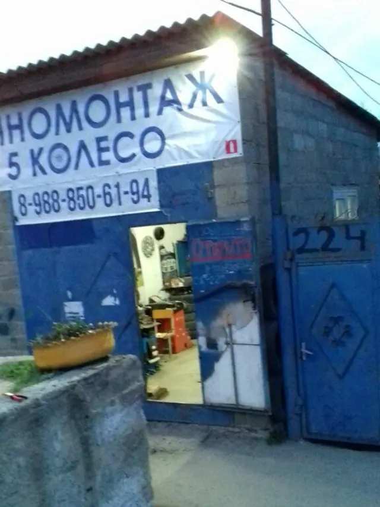
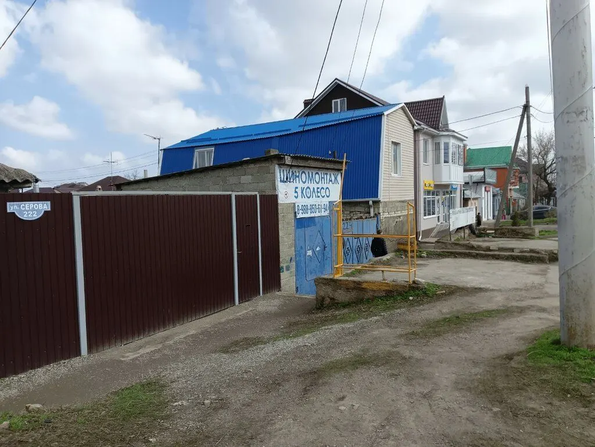
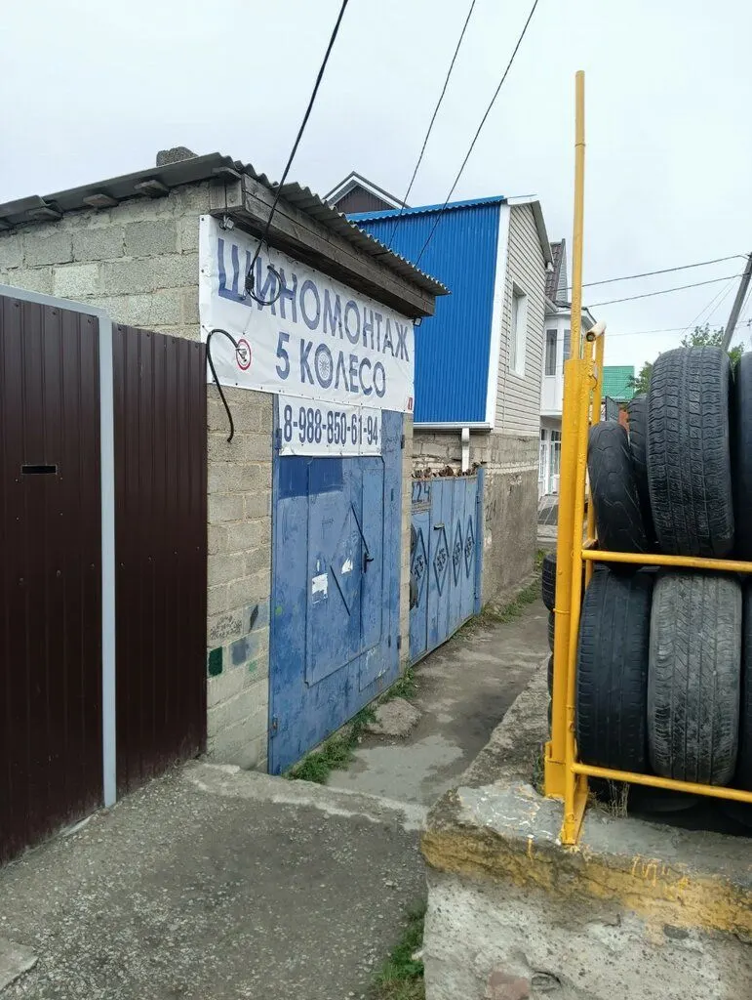
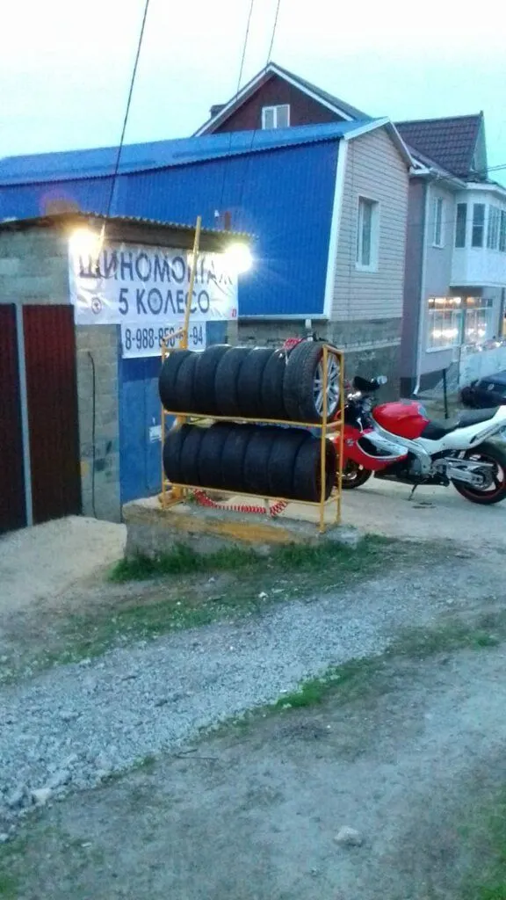
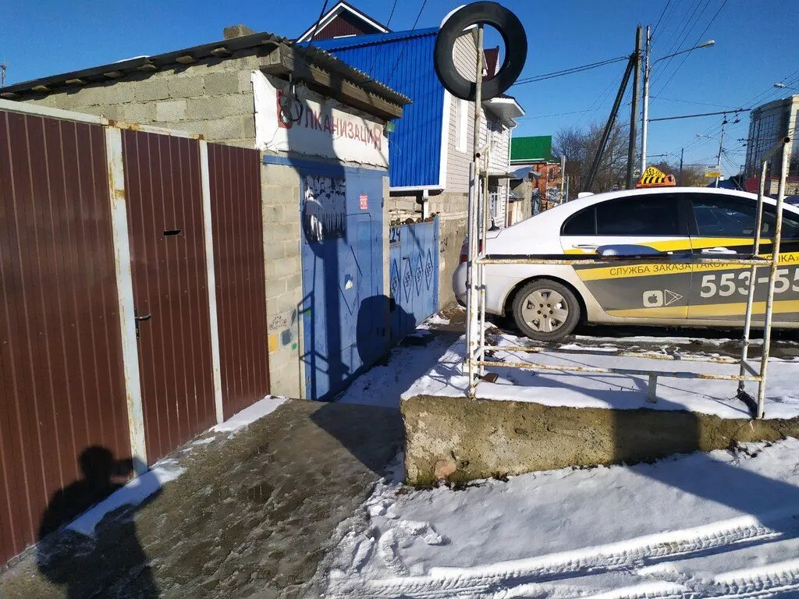

Шиномонтаж · выездной · круглосуточно
Шиномонтаж «5 Колесо» в Ставрополе
Выбираете услугу, день и время – запись уходит в WhatsApp. Выездной шиномонтаж и хранение шин. Круглосуточно.

- 4,0 на Яндекс Картах, 16 отзывов
- Круглосуточно, ежедневно
- Выездной шиномонтаж

Услуги
Услуги – с карточки на Яндекс Картах. Прайса там нет.
Что делаем
- Шиномонтажуточнить
- Выездной шиномонтажуточнить
- Хранение шинуточнить
На карточке цены не указаны – стоимость уточняйте по телефону. Перед ночным приездом лучше позвонить.
Как записаться
- 01
Выбираете услугу, день и время
Ниже, в форме записи: сообщение уходит в WhatsApp с готовым текстом.
- 02
Или пишете и звоните сами
Контакты – в конце страницы, работаем круглосуточно.
- 03
Приходите: улица Серова, 224/1
Адрес и карта – в конце страницы.



Что вас ждёт
Приезжают на вызов
Клиент пишет в отзыве: вызывал поздно вечером, оперативно приехали.
Быстро и недорого
В отзыве: сделали всё быстро, качественно и недорого.
Утром и ночью
Один из гостей приехал в половине пятого утра, и ему всё сделали.
Отзывы с Яндекс.Карт
«Часто пользуюсь их услугами, т.к живу рядом. За пару лет ни одного нарекания Рекомендую.»
Sergey Stepanidenko · 11 марта
«Отличная шиномонтажная мастерская. Сделали все быстро качественно и совсем недорого!»
Андрей Балашенко · 26 апреля
«В пол пятого утра приехал все сделали четко и быстро ,еще и в придачу поменяли колодки»
вячеслав к. · 25 апреля
Отзывы с карточки на Яндекс.Картах, без правок.
Частые вопросы
Есть выезд?
Да, выездной шиномонтаж указан на карточке.
Вы работаете ночью?
На карточке указан круглосуточный режим; перед поездкой лучше позвонить.
Где вы находитесь?
Ставрополь, улица Серова, 224/1.
Запишитесь на удобное время
- Адрес
- улица Серова, 224/1, Ставрополь
- Часы
- ежедневно, круглосуточно
- Телефон
- +7 (906) 442-22-05